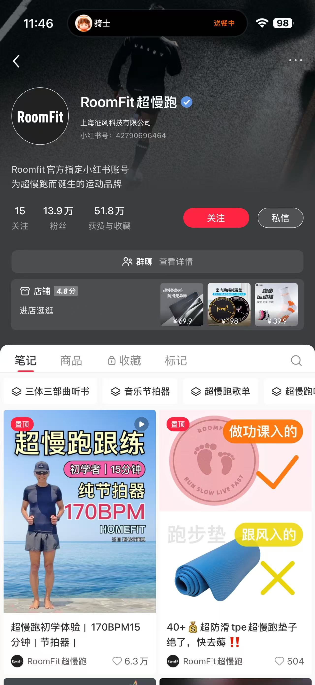
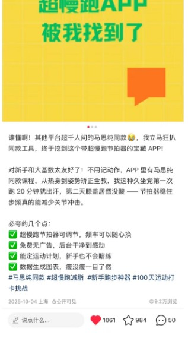

运动健康品牌运营
把超慢跑做成
用户愿意跟练的内容
参与 RoomFit 运动健康品牌全渠道运营，把用户场景、跟练内容、达人合作和电商承接连起来。
- 运营运动健康账号粉丝规模
- 13.9万
- 参与核心单品累计销量
- 4.8万+单
- 参与单品项目整体GMV
- 240万+

从用户问题出发
运动枯燥、担心扰民、想找容易坚持的居家运动方式，是内容策划的重要起点。把超慢跑与听书、历史文化内容结合，让运动过程更有趣，也让产品用途更容易被理解。
用户洞察
从评论与反馈里整理场景，提炼静音、防滑、居家跟练等用户关心的问题。
内容与达人
策划图文与短视频，开发达人、安排寄样与合作，保持卖点表达一致。
电商承接
参与优惠活动、商品展示与详情页优化，把内容兴趣接到商品理解和购买。
代表跟练内容
代表笔记获赞6.3万。作品将跟练和知识内容结合，以具体使用场景承接用户兴趣。

超慢跑 App 内容推广
围绕“边超慢跑边听书”的使用场景制作 App 种草内容，让用户看懂计时、听书与运动记录等使用价值。展示作品截图记录了9.2万浏览、1061次点赞及984次收藏。

上述为内容表现，账号粉丝为展示时的规模；销量和GMV对应参与单品的项目整体口径。